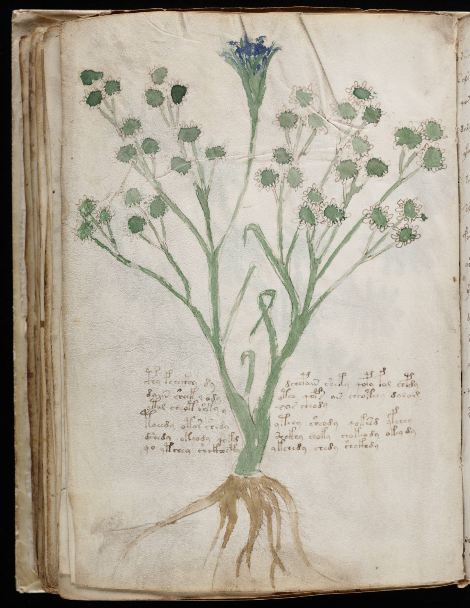

Voynich
Words
Folio
About
f65v
1
cphy
fchecfhy
dydchepain
shety
qopy
fol
chpdy
2
daiin
sheek
l
odyyteo
qop*
air
cheoteey
dalam
3
ytal
cheot
shky
yeas
cheody
4
toeedy
otor
shedyyteey
sheody
qokesd
yfchey
5
dshedy
okeody
qokdshckhy
choky
chokeody
okey
dy
6
qo
ytchey
shckhh
cphyykchhdy
chedy
shckhdy
<<
<
>
>>
